Site Name
Focus & Frame Photography
Reason: This name highlights the technical precision (focus) and the artistic composition (frame) of the photography business, sounding professional yet creative.
Site Purpose
The purpose of this website is to showcase a professional photography portfolio, provide detailed information about session packages (portraits, events, and weddings), and allow potential clients to book sessions through an integrated contact system.
Scenarios
Scenario 1: As a person planning a wedding, how can I see previous wedding galleries to evaluate the photographer's style and quality?
Scenario 2: As a potential client, where can I find the pricing for a 1-hour outdoor portrait session and what is included in the package?
Color Scheme
The Primary Color (Charcoal Black) will be used for text and header backgrounds. The Secondary Color (Gold) is used for accents and call-to-action buttons. The Accent (Off-white) provides a clean, gallery-like background.
Typography
Heading Font: Playfair Display
Capturing Moments That Last Forever
Body Font: Raleway
This font is light and modern, ensuring that the descriptions of our services and the stories behind our photos are easy to read and elegant.
Wireframes
Mobile View
A single-column layout optimized for storytelling and personal branding. The flow starts with the Hero, followed by the About Me section, an emotional quote, and categorized service galleries.
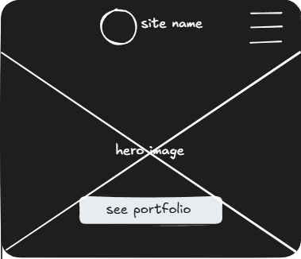
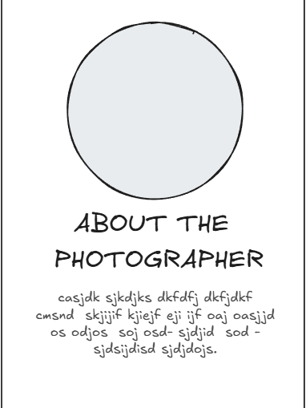
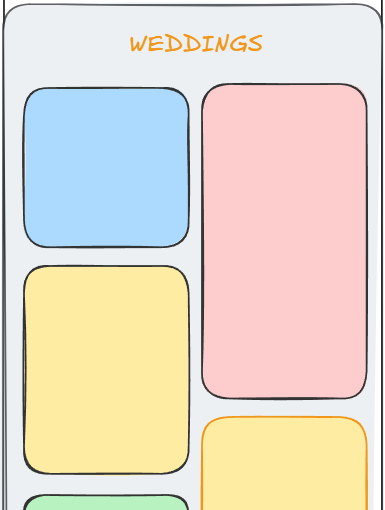
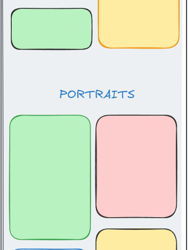
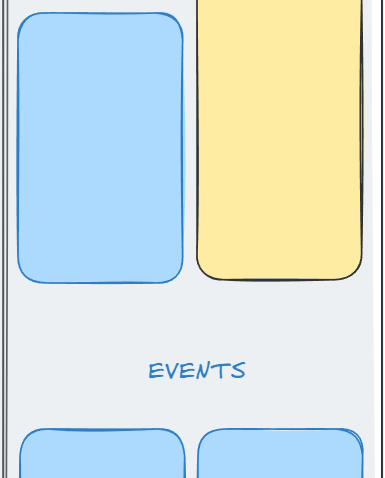
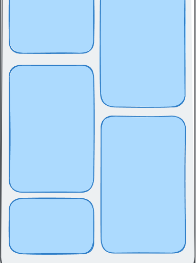
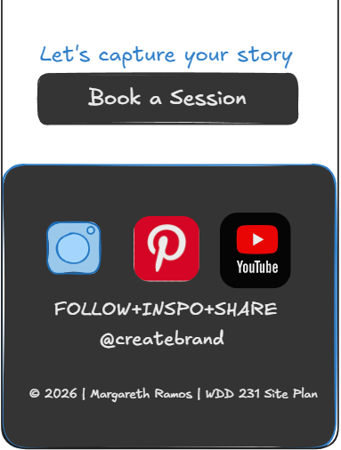
Desktop View
A wide-screen experience utilizing a Masonry grid for high visual impact and a multi-column footer for easy navigation.
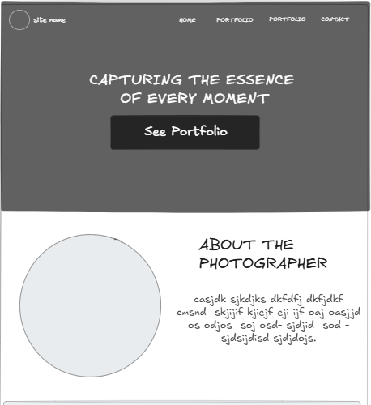
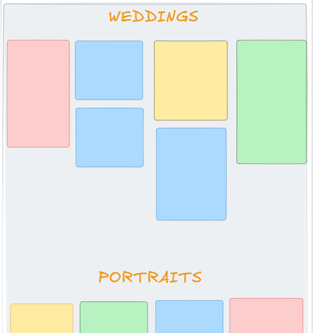
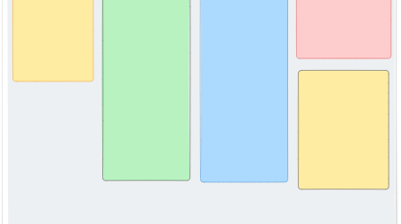
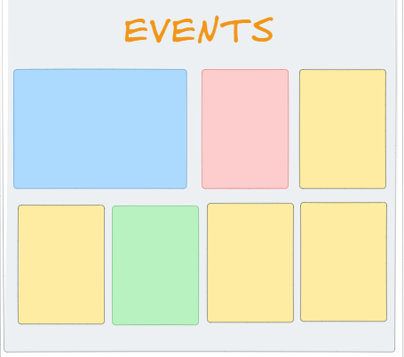